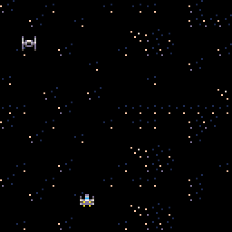

Novemeber 18th, 2021: Dynamite! (with a laserbeam)
I’m back! Today’s post is going to focus on how I implemented the ability to shoot lasers and the VERY basic AI (I’m not sure you could even call it that right now, it only moves sideways lol). Let’s get right into it!
So, to begin, I made two new variables in my variable page in Pico like,
lasers = {}
lastimer = 0
Because Pico uses lua, making objects like you do in a typical OOP is a little different. You basically have to make a collection and give the object its attributes in the collection. The lasers array is going to hold all the lasers that are currently on screen, and the lastimer variable is used to create a delay between firing two different lasers. In order to draw the lasers, I created a few methods in the draw page
--function for drawing lasers
function laserdraw(o)
spr(o.spr,o.x,o.y)
end
--moves bullets a little bit at a time
function laserupdate(b)
b.x += b.dx --x moves by dx every frame
b.y -= b.dy --y moves by dy every frame
b.time -= 1 --if the laser has exsited for too long, delete it
return b.time > 0 --returns true if still alive
end
--creates a new laser
function newlaser(x,y,w,h,dx,dy)
local b = { --only use b in this function
x=x,y=y,dx=dx,dy=dy,
w=w,h=j,
time=60, --how long a bullet will last
update=laserupdate, --putting function in table
spr=4,draw=laserdraw
}
add(lasers,b)
return b --if a laser is special we can adjust it
end
I also updated my draw function to include the line
for o in all(lasers) do o:draw() end
Which basically draws each laser that’s in the laser array.
Lastly, I added a function, a while loop, and some conditional statements to the update page. In the _update() function, I added this to create the delay effect between firing a lot of lasers at a time.
if lastimer > 0 then
lastimer -= 1
else
lastimer = 0
end
I also added the line
if btn(❎) then createlas() end
To make the ship “shoot” a laser if the x key is pressed. In order to update the laser’s position, I added this in the _draw() function as well
local i,j=1,1 --properly support deleting items
while(lasers[i]) do
if lasers[i]:update() then
if(i!=j) lasers[j]=lasers[i] lasers[i]=nil --shifts object if necessary
j+=1
else lasers[i]=nil end --remove lasers that have died or timed out
i+=1 --go to the next object
end
This block of code updates the laser’s position every other frame. I added two new functions outside the _draw() function. The first one is
function starttimer()
lastimer = 30
end
This one is pretty self explanatory, it starts the delay timer when it is invoked. The next method is used to create a laser after the button is pressed.
function createlas()
if lastimer == 0 then
newlaser(p.x,p.y,4,4,0,2)
starttimer()
end
end
And that’s all! If you press x you should see a laser shoot out of the ship
I’m going to end this post here, expect info on the shooting mechanics and the AI movement on the next post!
Novemeber 16th, 2021: aka, the big boom
Hey! Welcome to my new blog! This idea was inspired by the fact that I wanted to make my own little slice of the internet.This first blog post is going to focus on the Pico-8 game I’ve been making on and off for the past couple of weeks. I wanted to show you guys some of the findings, challenges, and ideas that I’ve seen while working on this Pico game! Let’s dive in!
I want to start this by explaining what the Pico-8 game engine is. Pico defines itself as a “fantasy console for making, sharing, and playing tiny games and other computer programs.” What is a fantasy console? Good question! A fantasy console is basically a console that never existed. There’s no actual hardware! Pico provides everything you need to make a game with some special limitations that makes game development on Pico super fun!

This is what you get when you load up Pico-8
I decided to make a simple game to get some experience with this console because I thought the concept was super cool! My game (right now) is called SWars. It's… inspired by the popular movie series Star Wars, I’m sure you’ve heard of it before.
The first challenge I had was getting the sprite to move. Luckily, Pico makes this super easy. I made an x and y variable for the player an added some If statements to handle button presses

One of the cool things about Pico is that it proves these buttons that you can get by pressing the shift key and a letter on the keyboard.
Then, in the _draw() function I updated the sprites position.

We have movement!
I’m going to end this post here, expect info on the shooting mechanics and the AI movement on the next post!